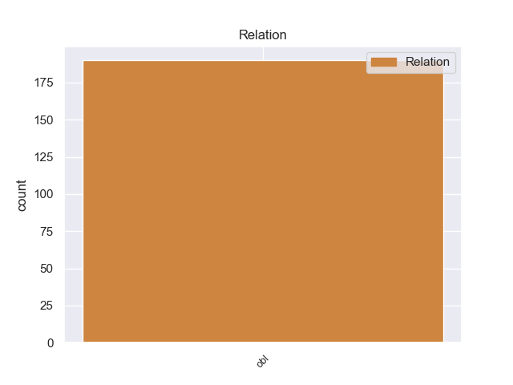
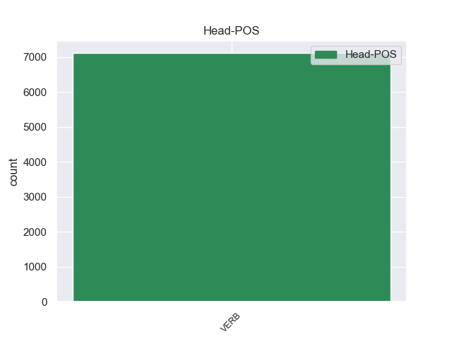
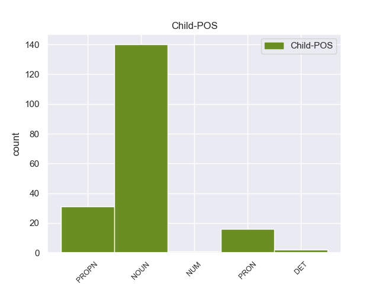

Distribution of features within this leaf



Morphosyntax Rules sorted by frequency.
- When the dependent token is the oblique nominal(obl) of the head token, and the head token is DET and the dependent token is NOUN, the Case needs to be Nom.
1 Были _ _ _ _ 0 _ _ _
2 цветы _ _ _ _ 0 _ _ _
3 , _ _ _ _ 0 _ _ _
4 похожие _ _ _ _ 0 _ _ _
5 на _ _ _ _ 0 _ _ _
6 садовые _ _ _ _ 0 _ _ _
7 бессмертники _ _ _ _ 0 _ _ _
8 , _ _ _ _ 0 _ _ _
9 но _ _ _ _ 0 _ _ _
10 не _ _ _ _ 0 _ _ _
11 сухие _ _ _ _ 0 _ _ _
12 , _ _ _ _ 0 _ _ _
13 а _ _ _ _ 0 _ _ _
14 трепетно _ _ _ _ 0 _ _ _
15 - _ _ _ _ 0 _ _ _
16 мягкие _ _ _ _ 0 _ _ _
17 , _ _ _ _ 0 _ _ _
18 полные _ _ _ _ 0 _ _ _
19 в _ _ _ _ 0 _ _ _
20 каждом _ _ _ _ 0 _ _ _
21 лепестке _ _ _ _ 0 _ _ _
22 нежной _ _ _ _ 0 _ _ _
23 , _ _ _ _ 0 _ _ _
24 непрочной _ _ _ _ 0 _ _ _
25 жизни _ _ _ _ 0 _ _ _
26 , _ _ _ _ 0 _ _ _
27 с _ _ _ _ 0 _ _ _
28 оранжевым _ _ _ _ 0 _ _ _
29 венчиком _ _ _ _ 0 _ _ _
30 и _ _ _ _ 0 _ _ _
31 синей _ _ _ _ 0 _ _ _
32 короной _ _ _ _ 0 _ _ _
33 ; _ _ _ _ 0 _ _ _
34 были _ _ _ _ 0 _ _ _
35 , _ _ _ _ 0 _ _ _
36 как _ _ _ _ 0 _ _ _
37 садовые _ _ _ _ 0 _ _ _
38 лилии _ _ _ _ 0 _ _ _
39 , _ _ _ _ 0 _ _ _
40 целые _ _ _ _ 0 _ _ _
41 лужайки _ _ _ _ 0 _ _ _
42 палевых _ _ _ _ 0 _ _ _
43 , _ _ _ _ 0 _ _ _
44 навощенных _ _ _ _ 0 _ _ _
45 , _ _ _ _ 0 _ _ _
46 лилий _ _ _ _ 0 _ _ _
47 на _ _ _ _ 0 _ _ _
48 длинных _ _ _ _ 0 _ _ _
49 , _ _ _ _ 0 _ _ _
50 стройных _ _ _ _ 0 _ _ _
51 стеблях _ _ _ _ 0 _ _ _
52 с _ _ _ _ 0 _ _ _
53 саблеобразными _ _ _ _ 0 _ _ _
54 листьями _ _ _ _ 0 _ _ _
55 ; _ _ _ _ 0 _ _ _
56 были _ _ _ _ 0 _ _ _
57 , _ _ _ _ 0 _ _ _
58 как _ _ _ _ 0 _ _ _
59 махровая _ _ _ _ 0 _ _ _
60 гвоздика _ _ _ _ 0 _ _ _
61 , _ _ _ _ 0 _ _ _
62 но _ _ _ _ 0 _ _ _
63 пышнее _ _ _ _ 0 _ _ _
64 и _ _ _ _ 0 _ _ _
65 всех _ _ _ _ 0 _ _ _
66 расцветок _ _ _ _ 0 _ _ _
67 , _ _ _ _ 0 _ _ _
68 от _ _ _ _ 0 _ _ _
69 фиолетового _ _ _ _ 0 _ _ _
70 до _ _ _ _ 0 _ _ _
71 бордового _ _ _ _ 0 _ _ _
72 ; _ _ _ _ 0 _ _ _
73 были _ _ _ _ 0 _ _ _
74 и _ _ _ _ 0 _ _ _
75 такие такой DET _ Case=Nom|Number=Plur 0 _ _ _
76 , _ _ _ _ 0 _ _ _
77 что _ _ _ _ 0 _ _ _
78 не _ _ _ _ 0 _ _ _
79 сравнишь _ _ _ _ 0 _ _ _
80 и _ _ _ _ 0 _ _ _
81 не _ _ _ _ 0 _ _ _
82 опишешь _ _ _ _ 0 _ _ _
83 , _ _ _ _ 0 _ _ _
84 словно _ _ _ _ 0 _ _ _
85 фантастические _ _ _ _ 0 _ _ _
86 гибриды гибрид NOUN _ Animacy=Inan|Case=Nom|Gender=Masc|Number=Plur 75 obl 75:obl _
87 василька _ _ _ _ 0 _ _ _
88 с _ _ _ _ 0 _ _ _
89 георгином _ _ _ _ 0 _ _ _
90 , _ _ _ _ 0 _ _ _
91 ромашки _ _ _ _ 0 _ _ _
92 с _ _ _ _ 0 _ _ _
93 настурцией _ _ _ _ 0 _ _ _
94 , _ _ _ _ 0 _ _ _
95 причудливые _ _ _ _ 0 _ _ _
96 , _ _ _ _ 0 _ _ _
97 сказочные _ _ _ _ 0 _ _ _
98 цветы _ _ _ _ 0 _ _ _
99 с _ _ _ _ 0 _ _ _
100 длиннющими _ _ _ _ 0 _ _ _
101 пестиками _ _ _ _ 0 _ _ _
102 , _ _ _ _ 0 _ _ _
103 торчащими _ _ _ _ 0 _ _ _
104 , _ _ _ _ 0 _ _ _
105 будто _ _ _ _ 0 _ _ _
106 щупальца _ _ _ _ 0 _ _ _
107 , _ _ _ _ 0 _ _ _
108 из _ _ _ _ 0 _ _ _
109 глубокой _ _ _ _ 0 _ _ _
110 , _ _ _ _ 0 _ _ _
111 слоистой _ _ _ _ 0 _ _ _
112 чашки _ _ _ _ 0 _ _ _
113 . _ _ _ _ 0 _ _ _
1 Для _ _ _ _ 0 _ _ _
2 такой такой DET _ Case=Gen|Gender=Fem|Number=Sing 0 _ _ _
3 огромной _ _ _ _ 0 _ _ _
4 страны _ _ _ _ 0 _ _ _
5 , _ _ _ _ 0 _ _ _
6 как _ _ _ _ 0 _ _ _
7 Советский _ _ _ _ 0 _ _ _
8 Союз Союз PROPN _ Animacy=Inan|Case=Nom|Gender=Masc|Number=Sing 2 obl 2:obl SpaceAfter=No
9 , _ _ _ _ 0 _ _ _
10 это _ _ _ _ 0 _ _ _
11 имеет _ _ _ _ 0 _ _ _
12 большое _ _ _ _ 0 _ _ _
13 значение _ _ _ _ 0 _ _ _
14 , _ _ _ _ 0 _ _ _
15 так _ _ _ _ 0 _ _ _
16 как _ _ _ _ 0 _ _ _
17 значительно _ _ _ _ 0 _ _ _
18 расширяется _ _ _ _ 0 _ _ _
19 зона _ _ _ _ 0 _ _ _
20 уверенного _ _ _ _ 0 _ _ _
21 приема _ _ _ _ 0 _ _ _
22 . _ _ _ _ 0 _ _ _
1 Мы _ _ _ _ 0 _ _ _
2 - _ _ _ _ 0 _ _ _
3 мама _ _ _ _ 0 _ _ _
4 , _ _ _ _ 0 _ _ _
5 дед _ _ _ _ 0 _ _ _
6 и _ _ _ _ 0 _ _ _
7 я _ _ _ _ 0 _ _ _
8 - _ _ _ _ 0 _ _ _
9 довольно _ _ _ _ 0 _ _ _
10 долго _ _ _ _ 0 _ _ _
11 томились _ _ _ _ 0 _ _ _
12 перед _ _ _ _ 0 _ _ _
13 высокими _ _ _ _ 0 _ _ _
14 стенами _ _ _ _ 0 _ _ _
15 тюрьмы _ _ _ _ 0 _ _ _
16 , _ _ _ _ 0 _ _ _
17 затем _ _ _ _ 0 _ _ _
18 нас _ _ _ _ 0 _ _ _
19 впустили _ _ _ _ 0 _ _ _
20 во _ _ _ _ 0 _ _ _
21 внутренний _ _ _ _ 0 _ _ _
22 двор _ _ _ _ 0 _ _ _
23 , _ _ _ _ 0 _ _ _
24 битком _ _ _ _ 0 _ _ _
25 набитый _ _ _ _ 0 _ _ _
26 такими такой DET _ Case=Ins|Number=Plur 0 _ _ _
27 же _ _ _ _ 0 _ _ _
28 как _ _ _ _ 0 _ _ _
29 и _ _ _ _ 0 _ _ _
30 мы мы PRON _ Case=Nom|Number=Plur|Person=1 26 obl 26:obl SpaceAfter=No
31 , _ _ _ _ 0 _ _ _
32 прощающимися _ _ _ _ 0 _ _ _
33 . _ _ _ _ 0 _ _ _
1 Квартиры _ _ _ _ 0 _ _ _
2 были _ _ _ _ 0 _ _ _
3 все весь DET _ Case=Nom|Number=Plur 0 _ _ _
4 как _ _ _ _ 0 _ _ _
5 одна один DET _ Case=Nom|Degree=Pos|Gender=Fem|Number=Sing 3 obl 3:obl _
6 - _ _ _ _ 0 _ _ _
7 без _ _ _ _ 0 _ _ _
8 стекол _ _ _ _ 0 _ _ _
9 , _ _ _ _ 0 _ _ _
10 в _ _ _ _ 0 _ _ _
11 густом _ _ _ _ 0 _ _ _
12 инее _ _ _ _ 0 _ _ _
13 , _ _ _ _ 0 _ _ _
14 с _ _ _ _ 0 _ _ _
15 холмиками _ _ _ _ 0 _ _ _
16 снега _ _ _ _ 0 _ _ _
17 по _ _ _ _ 0 _ _ _
18 углам _ _ _ _ 0 _ _ _
19 . _ _ _ _ 0 _ _ _
1 Списки _ _ _ _ 0 _ _ _
2 с _ _ _ _ 0 _ _ _
3 явным _ _ _ _ 0 _ _ _
4 националистическим _ _ _ _ 0 _ _ _
5 душком _ _ _ _ 0 _ _ _
6 все весь DET _ Case=Nom|Number=Plur 0 _ _ _
7 как _ _ _ _ 0 _ _ _
8 один один NUM _ Case=Nom|Gender=Masc 6 obl 6:obl _
9 провалились _ _ _ _ 0 _ _ _
10 , _ _ _ _ 0 _ _ _
11 та _ _ _ _ 0 _ _ _
12 же _ _ _ _ 0 _ _ _
13 судьба _ _ _ _ 0 _ _ _
14 постигла _ _ _ _ 0 _ _ _
15 и _ _ _ _ 0 _ _ _
16 блок _ _ _ _ 0 _ _ _
17 имени _ _ _ _ 0 _ _ _
18 Сталина _ _ _ _ 0 _ _ _
19 . _ _ _ _ 0 _ _ _
non-conforming Examples:
1 Экономный _ _ _ _ 0 _ _ _
2 прокофьевский _ _ _ _ 0 _ _ _
3 стиль _ _ _ _ 0 _ _ _
4 напоминает _ _ _ _ 0 _ _ _
5 язык _ _ _ _ 0 _ _ _
6 его _ _ _ _ 0 _ _ _
7 партитур _ _ _ _ 0 _ _ _
8 - _ _ _ _ 0 _ _ _
9 в _ _ _ _ 0 _ _ _
10 своих _ _ _ _ 0 _ _ _
11 записках _ _ _ _ 0 _ _ _
12 он _ _ _ _ 0 _ _ _
13 такой такой DET _ Case=Nom|Gender=Masc|Number=Sing 0 _ _ _
14 же _ _ _ _ 0 _ _ _
15 рационалист _ _ _ _ 0 _ _ _
16 , _ _ _ _ 0 _ _ _
17 как _ _ _ _ 0 _ _ _
18 и _ _ _ _ 0 _ _ _
19 в _ _ _ _ 0 _ _ _
20 музыке музыка NOUN _ Animacy=Inan|Case=Loc|Gender=Fem|Number=Sing 13 obl 13:obl SpaceAfter=No
21 . _ _ _ _ 0 _ _ _
1 " _ _ _ _ 0 _ _ _
2 Считалось _ _ _ _ 0 _ _ _
3 , _ _ _ _ 0 _ _ _
4 что _ _ _ _ 0 _ _ _
5 Марс _ _ _ _ 0 _ _ _
6 имеет _ _ _ _ 0 _ _ _
7 сравнительно _ _ _ _ 0 _ _ _
8 тонкую _ _ _ _ 0 _ _ _
9 атмосферу _ _ _ _ 0 _ _ _
10 , _ _ _ _ 0 _ _ _
11 но _ _ _ _ 0 _ _ _
12 никто _ _ _ _ 0 _ _ _
13 и _ _ _ _ 0 _ _ _
14 не _ _ _ _ 0 _ _ _
15 предполагал _ _ _ _ 0 _ _ _
16 , _ _ _ _ 0 _ _ _
17 что _ _ _ _ 0 _ _ _
18 она _ _ _ _ 0 _ _ _
19 окажется _ _ _ _ 0 _ _ _
20 достаточно _ _ _ _ 0 _ _ _
21 плотной _ _ _ _ 0 _ _ _
22 , _ _ _ _ 0 _ _ _
23 примерно _ _ _ _ 0 _ _ _
24 такой такой DET _ Case=Ins|Gender=Fem|Number=Sing 0 _ _ _
25 же _ _ _ _ 0 _ _ _
26 , _ _ _ _ 0 _ _ _
27 как _ _ _ _ 0 _ _ _
28 на _ _ _ _ 0 _ _ _
29 Земле Земля PROPN _ Animacy=Inan|Case=Loc|Gender=Fem|Number=Sing 24 obl 24:obl _
30 на _ _ _ _ 0 _ _ _
31 высоте _ _ _ _ 0 _ _ _
32 20 _ _ _ _ 0 _ _ _
33 - _ _ _ _ 0 _ _ _
34 30 _ _ _ _ 0 _ _ _
35 км _ _ _ _ 0 _ _ _
36 от _ _ _ _ 0 _ _ _
37 поверхности _ _ _ _ 0 _ _ _
38 . _ _ _ _ 0 _ _ _
1 В _ _ _ _ 0 _ _ _
2 том _ _ _ _ 0 _ _ _
3 числе число NOUN _ Animacy=Inan|Case=Loc|Gender=Neut|Number=Sing 5 obl 5:obl _
4 и _ _ _ _ 0 _ _ _
5 теми тот DET _ Case=Ins|Number=Plur 0 _ _ _
6 же _ _ _ _ 0 _ _ _
7 коллегами _ _ _ _ 0 _ _ _
8 - _ _ _ _ 0 _ _ _
9 телевизионщиками _ _ _ _ 0 _ _ _
10 . _ _ _ _ 0 _ _ _
1 Научные _ _ _ _ 0 _ _ _
2 приоритеты _ _ _ _ 0 _ _ _
3 такие такой DET _ Case=Nom|Number=Plur 0 _ _ _
4 же _ _ _ _ 0 _ _ _
5 , _ _ _ _ 0 _ _ _
6 как _ _ _ _ 0 _ _ _
7 и _ _ _ _ 0 _ _ _
8 в _ _ _ _ 0 _ _ _
9 других _ _ _ _ 0 _ _ _
10 странах страна NOUN _ Animacy=Inan|Case=Loc|Gender=Fem|Number=Plur 3 obl 3:obl SpaceAfter=No
11 : _ _ _ _ 0 _ _ _
12 в _ _ _ _ 0 _ _ _
13 Германии _ _ _ _ 0 _ _ _
14 , _ _ _ _ 0 _ _ _
15 во _ _ _ _ 0 _ _ _
16 Франции _ _ _ _ 0 _ _ _
17 . _ _ _ _ 0 _ _ _
1 Охарактеризуйте _ _ _ _ 0 _ _ _
2 , _ _ _ _ 0 _ _ _
3 пожалуйста _ _ _ _ 0 _ _ _
4 , _ _ _ _ 0 _ _ _
5 состояние _ _ _ _ 0 _ _ _
6 области _ _ _ _ 0 _ _ _
7 науки _ _ _ _ 0 _ _ _
8 , _ _ _ _ 0 _ _ _
9 в _ _ _ _ 0 _ _ _
10 которой _ _ _ _ 0 _ _ _
11 вы _ _ _ _ 0 _ _ _
12 работаете _ _ _ _ 0 _ _ _
13 , _ _ _ _ 0 _ _ _
14 каким какой DET _ Case=Ins|Gender=Neut|Number=Sing 0 _ _ _
15 оно _ _ _ _ 0 _ _ _
16 было _ _ _ _ 0 _ _ _
17 примерно _ _ _ _ 0 _ _ _
18 20 _ _ _ _ 0 _ _ _
19 лет год NOUN _ Animacy=Inan|Case=Gen|Gender=Masc|Number=Plur 14 obl 14:obl _
20 назад _ _ _ _ 0 _ _ _
21 ? _ _ _ _ 0 _ _ _